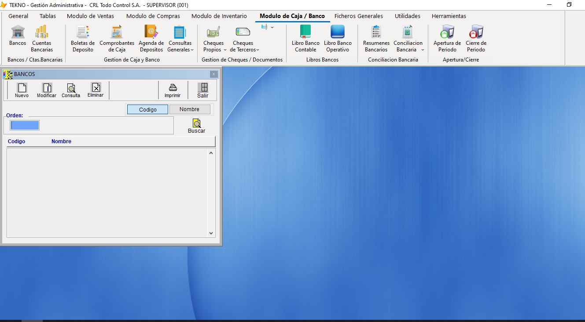
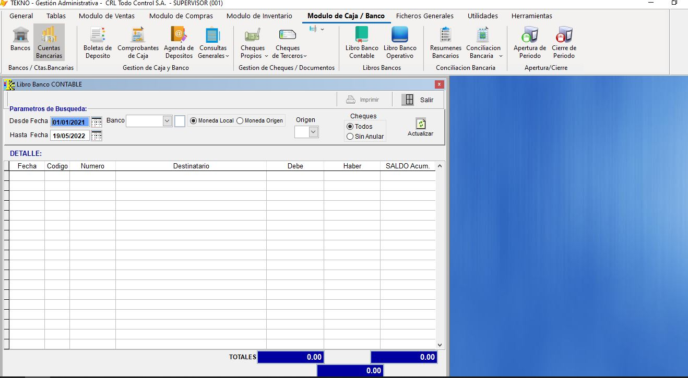
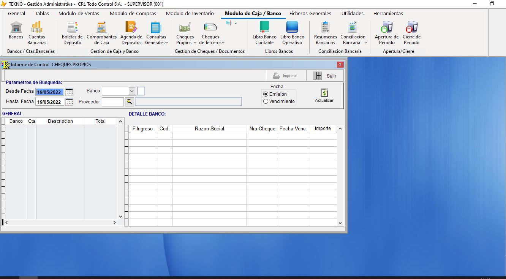
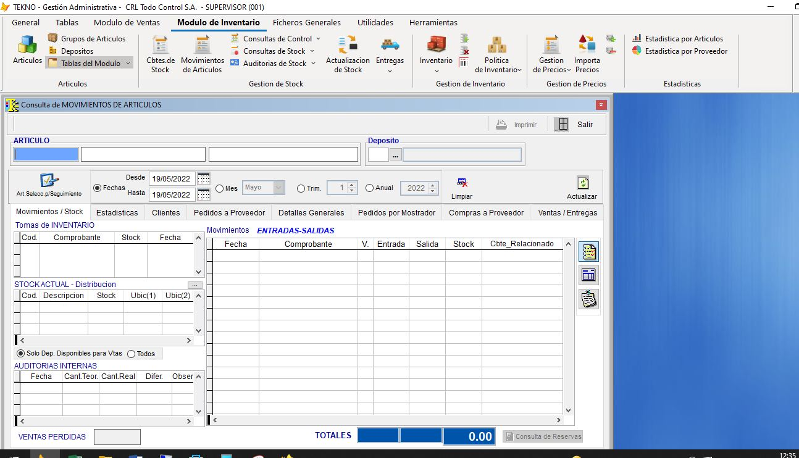
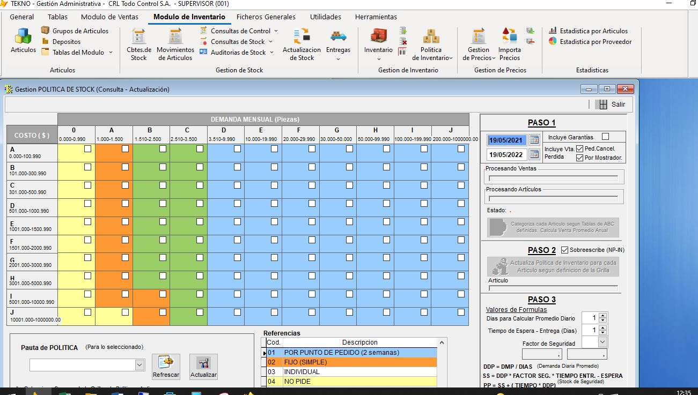
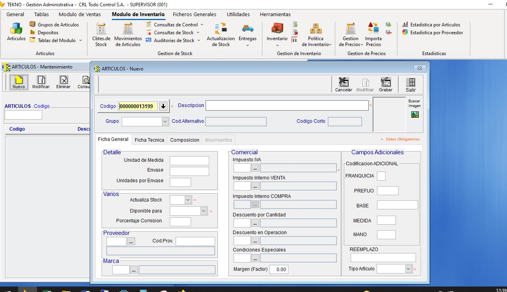

Ofrece la posibilidad de administrar caja, bancos, tarjetas de crédito y cheques. Generar de manera automática la conciliación bancaria y los asientos contables. Emitir informes diarios de movimientos de caja.
  Te permite realizar un manejo integral de tu cartera de Proveedores, hacer un seguimiento de las diferentes cuentas corrientes, la carga de facturas de compras, generar el libro IVA y los asientos contables correspondientes. También podrás crear órdenes de compra a las cuales podrás hacer seguimiento de: condiciones, autorización, recepción y cumplimiento.
Podrás ingresar los comprobantes de compras, administrar listas de precios en pesos o en moneda extranjera, controlar existencias, emitir listados de stock valorizados. Realizar ciclados e inventarios completos, generando a partir de allí completos informes de diferencias. Permite también definir políticas de manejos de stock para determinar stocks mínimos, puntos de pedidos, cantidades a reponer, etc.
  Permite facturar, generar y administrar pedidos, manejar tu cartera de clientes, emitir resúmenes de cuenta. Podrás también definir vencimientos, formas de pago, tipos de clientes y limites de crédito para cada uno. Integrado con AFIP para facturas electrónicas y facturas de crédito electrónicas. Además admite la personalización del diseño de tus facturas.